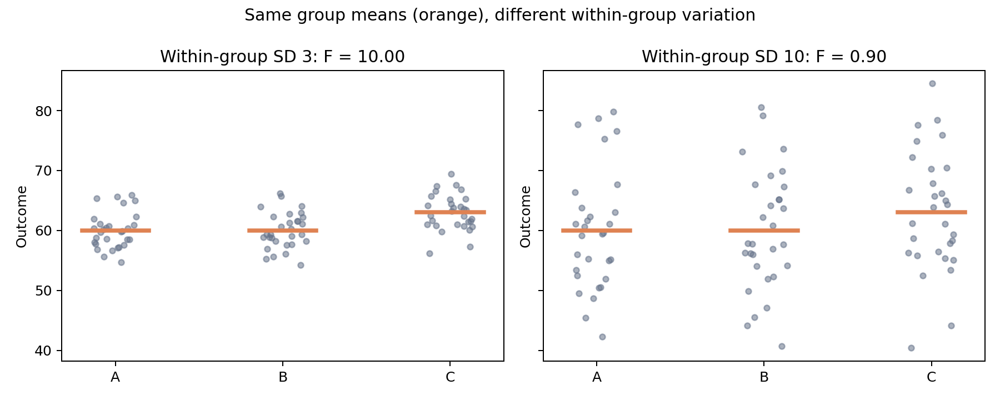

Is the
change real?
A faster delivery. A better campaign. A bigger purchase.
Something moved—but what does that actually tell us?
Five small explorations of hypothesis tests. Start with the question, change one setup, and see why the answer depends on how you look.
SIMULATED TEACHING EXAMPLES · SAVED RESULTSCan a test find a difference
when there isn’t one?
The situation. You’re comparing two delivery services. Both truly average 60 minutes, but one might be much less consistent—and you might have fewer deliveries from it.
What we want to show. A test should account for uncertainty. Pooling unequal variances can make a small, noisy group look more precise than it is, creating false alarms.
One saved example sample
Dots are individual simulated deliveries. Both population means are 60; sample means can differ by chance. Same axes in both settings.
How often did we get a false alarm?
20,000 repetitions per setting. Every detected difference here is a false positive. Dashed line: intended 5% rate.
Exact results, assumptions & why the tests differ
Independent normal observations; two-sided tests at α = 0.05. Student’s assumes equal population variances and pools their estimates; Welch’s estimates each group’s contribution separately and adjusts degrees of freedom. Neither requires equal sample sizes.
The second setting changes both spread and group size. It is their combined effect, not an isolated estimate of variance alone. Reversing which group is noisier can make Student’s conservative. This comparison measures false positives, not power; Welch’s does not fix dependence or every outlier problem.
Download saved metricsCould a real change hide
behind different starting points?
The situation. Thirty people do a timed task before and after a change. Some are naturally faster than others. These are the same people twice, not two independent groups.
What we want to show. Comparing each person with themselves cancels their baseline. Ignoring that pairing can bury a real average improvement in differences between people.
Same people, connected
Now subtract: after − before
Saved example: each line follows a person. The same underlying draws give exactly the same individual differences in both settings. Not everyone has to improve.
Detect a real −3-minute change
Check false alarms with no change
Different labelled scales: power is 0–100%; false positives are 0–10%. Welch’s here deliberately ignores known pairs; it is not an appropriate independent-data analysis of this design.
Exact results, assumptions & what cancels
Before = 60 + person’s offset + before noise. After = 60 + the same offset + change + after noise. Subtracting removes the offset. Each independent noise term has SD 5, so differences have SD √(5² + 5²) = 7.07 minutes.
Correctly matched measurements, independent people and normal differences in this simulation. Pairing is a design fact, not something to choose after inspecting significance. Positive covariance drives the sensitivity gain here; it is not a universal guarantee. Before/after change alone is not causal evidence.
20,000 repetitions per setting; common draws make scenario estimates correlated. Zero observed false positives does not mean zero underlying risk; the interval has a positive upper bound.
Download saved metricsSame average lift.
A very different story.
The situation. Average spending goes up 40%. Did the whole spending distribution shift, or did a few very large purchases move the average?
What we want to show. Means retain the dollar impact of big purchases. Ranks describe whether a random purchase from B tends to exceed one from A. Both are useful; they answer different questions.
50% means no tendency in either direction.
The population distributions
Analytic population curves, not sampled observations. Logarithmic dollar axis compresses distances but preserves order; height is density per dollar. The displayed range truncates the tails.
What the tests detect
Exact results, assumptions & what ranks mean
A is lognormal with median $30 and log-SD 1. Broad B multiplies independent draws by 1.4. Rare-spender B multiplies a randomly chosen 5% by 9: 0.95 + 0.05 × 9 = 1.4. Purchases are independent; these are not matched customer changes or real transactions.
Welch’s tests equal population means. Mann–Whitney’s standard null is identical distributions, and its U statistic estimates P(B > A) + ½P(B = A). It is not generally a median test or a test calibrated for every unequal-shape case with P(B > A) = 0.5. We use its asymptotic method with continuity correction.
Extreme magnitudes affect means; once one value exceeds another, making it larger does not change that pair’s ordering. It may still cross other observations. Ranks are not immune to unusual values. Genuine large purchases are not automatically errors.
The two alternatives change both rank effects and sampling uncertainty. Rejection rates are supporting evidence, not a universal test ranking. Skew does not automatically invalidate Welch’s; a nonsignificant result does not prove no difference.
Population effects · Saved test resultsMore chances to look.
More chances to be fooled.
The situation. You’re comparing several versions of a service. With three groups you can test A–B, A–C and B–C. With more groups, the list grows quickly.
What we want to show. A 5% threshold on every pair does not make the whole investigation a 5% false-alarm procedure. ANOVA asks one overall question; corrected pairwise tests ask which pairs differ.
Every possible pair
Each line is a comparison. Tests sharing groups are dependent. Group size stays fixed; adding groups also adds observations.
At least one false alarm in the experiment
20,000 saved experiments for each of the nine group counts. Dashed line: 5% family-wise target.
Exact false-alarm results & the independence trap
m = k(k−1)/2 pairwise comparisons. Uncorrected: any pair has p < .05. Bonferroni: any pair has p < .05/m. ANOVA: one omnibus p < .05. Pairwise tests use pooled Student’s t-tests under independent normal, equal-variance populations.
1 − 0.95ᵐ is the probability of at least one rejection for independent true-null tests. It is not the exact rate for these overlapping pairs, and we do not use it for this slider. Bonferroni does not require independence and can be conservative.
ANOVA tests whether all population means are equal, not whether variances are equal or which pairs differ. A significant ANOVA is not permission to run uncorrected follow-up tests.
Saved all-pairs resultsSame separation. Different noise.
Now one group really is different: population means are 60, 60 and 63. ANOVA compares between-group mean separation against within-group variation. More noise makes that fixed difference harder to detect.
Power to detect a real difference, not the false-alarm measure above. The three population variances are equal within each setting; n = 30 per group.
See the fixed-mean illustration & exact power results

Only this illustration centres residuals to hold sample means fixed. Actual repeated simulation samples are not centred. F = between-group mean square / within-group mean square; the mean squares account for degrees of freedom.
Enough people.
But enough in each cell?
The situation. Two campaigns have converted and non-converted users. When conversions are rare, even 120 people can leave almost no information in some cells.
What we want to show. Pearson’s chi-square compares observed counts with counts expected under independence. Its p-value uses an approximation. Fisher’s exact uses fixed-margin probabilities—but “exact” does not mean exactly 5% false alarms.
A constructed teaching table
Each cell shows observed / fitted expected counts. Highlighted expected counts are below 5.
False alarms when conversion rates are equal
20,000 null experiments per setting, including undefined chi-square cases as no rejection. Dashed line: 5% target.
Exact results, assumptions & sparse-table handling
Independent binary outcomes: each person contributes to one cell. Fixed group sizes, random conversions. Expected count = row total × column total / grand total; Pearson sums (observed − expected)² / expected. Its reference distribution has one degree of freedom here. Fitted expectations from observed margins differ from population-model expectations.
Fisher conditions on observed row and column totals, using hypergeometric probabilities. The two-sided convention sums tables with those margins no more probable than the observed table. Discrete p-values can make it conservative; it is not automatically more powerful.
Pearson disables continuity correction; Yates explicitly enables it. “About 5 per expected cell” is an introductory warning, not a universal cutoff. Sparse chi-square error can be upward or downward. This comparison concerns calibration, not power. No paired categorical or larger-table exact extension is included.
Saved metrics · Constructed tablesChoose the question.
Respect the design.
A test doesn’t decide whether a change matters, explain its cause, or turn a noisy result into certainty. It answers a particular question under particular assumptions.
What these rates and intervals mean
All five parts use saved simulated teaching examples—not observations of real deliveries, customers or campaigns. Each simulation setting has 20,000 repetitions with fixed seeds. These repetitions estimate a procedure’s performance; they are not a search for a publishable discovery.
False positives: how often a test rejects in the specified null setting. This is not the probability that a particular significant finding is false. Power: how often it detects the specified alternative, at this sample size and noise level. Lower false positives are not automatically better if sensitivity disappears.
Whiskers and tabulated bounds are 95% Wilson Monte Carlo intervals for rejection rates. They quantify simulation precision, not uncertainty about real-world validity or confidence intervals for a treatment effect. Rates, intervals and setup values are loaded from the notebook outputs. Common draws make some scenario comparisons correlated.
No fresh statistical trials run in this page. Controls select saved settings; the all-pairs slider uses only 2–10 groups, with no interpolation of uncomputed results.
Data, reproducibility & further reading
Prepared from the five executed notebooks in the local experiment3-is-the-change-real project. Original notebooks, trial files and plots are preserved. Each part offers its saved results; the complete website bundle includes the settings and seeds.
Download the five-part aggregate JSON
These parts are a starting point, not a universal test-selection chart. More advanced tests and multiple-testing procedures remain separate future work.